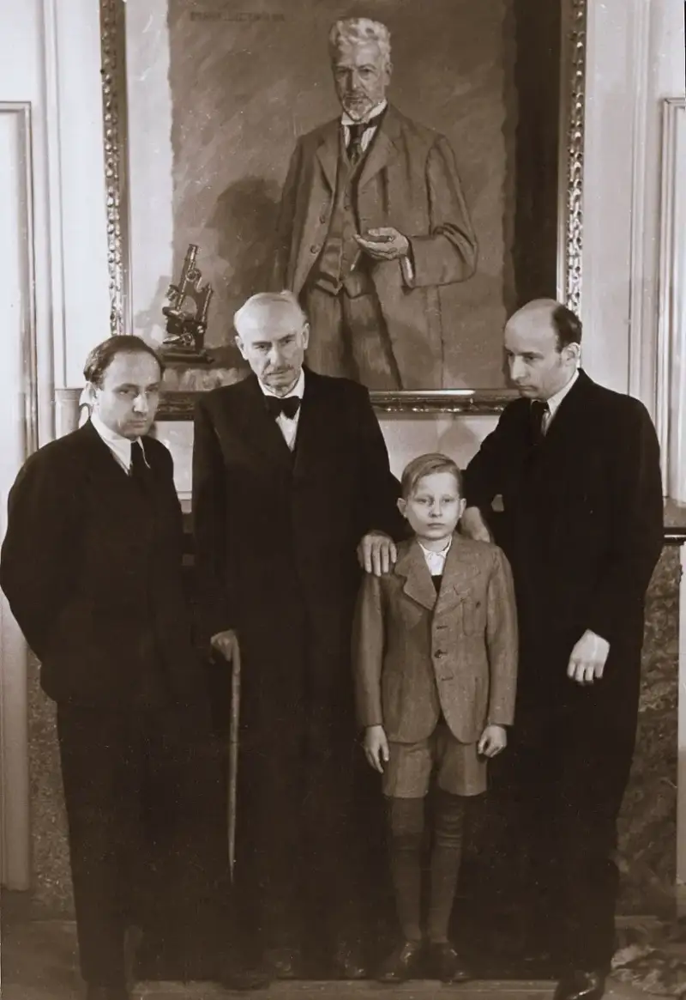
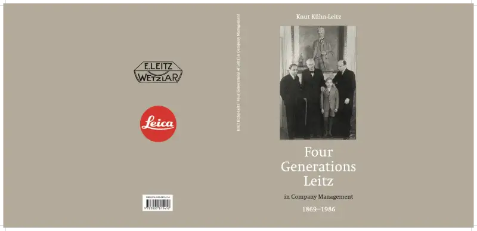

Telling the century-long story of the Leitz family, and how its founders built the success of the Leica camera brand
2025/4/8, Mainland China.The Business Legacy of the Leitz Family in Four Generations (1869-1986), written by Dr. Knut Kühn-Leitz, has just been published. This biography presents the full story of the Leitz family that built Leica Camera. Across four generations, the family's business leaders used far-sighted judgment to make the Leica brand an enduring landmark in the history of photography. The book first came out in German in 2020. Now, on the hundredth anniversary of the first mass-produced Leica 35mm camera, the Leica I, its English edition has been released.

In the book, Dr. Knut Kühn-Leitz examines the growth of the family business from his own point of view. Through far-sighted decisions and total commitment, the family not only shaped the field of photographic art but also had a decisive effect on the development of photographic technology. The story began in 1869, when the first leader, Ernst Leitz I (1843-1920), took over the Optical Institute of Wetzlar from Carl Kellner and renamed it the Leitz Workshop. By the turn of the century, the workshop had grown into an international company. His successor, Ernst Leitz II (1871-1956), made the landmark decision to mass-produce the 35mm Leica camera. He added a new camera system to the product line and opened a new era in 35mm photography. The third leader, Ernst Leitz III (1906-1979), together with his brothers Ludwig and Günther Leitz, guided the company through the post-war recovery. He did this by advancing research on optical glass, opening a second production site in Famalicao, Portugal, and launching precision optical measuring instruments. Dr. Knut Kühn-Leitz (1936-2020), the last manager from the family, joined the company in 1971. He led a successful restructuring and pushed several international partnerships, including one with Wild Heerbrugg, which bought out the Leitz family's shares in 1985.
The Business Legacy of the Leitz Family in Four Generations (1869-1986) does more than retell the family's century-long story. It also echoes the ongoing work that Leica Camera continues today. The book is printed to a high standard and brings the narrative to life with many fine images, including rare material from the company and family archives.
The Business Legacy of the Leitz Family in Four Generations (1869-1986) is now on sale at Leica stores worldwide.

Leica at 100: a witness to the century
For Leica Camera, 2025 marks the 100th anniversary of the Leica I. The Leica I first appeared at the Leipzig Spring Fair in 1925. It was the first Leica 35mm camera to be made in large numbers. Compact and portable, it created a new way of taking pictures and changed the world of photography. Under the slogan Leica at 100: a witness to the century, Leica Camera will hold a series of Leica I centenary events in cities such as Dubai, Milan, New York, Shanghai, and Tokyo. Through 2025, it will offer a rich program of cultural events and precious special editions. In June, the Leica Camera headquarters in Wetzlar will hold a series of celebrations that bring the centenary to its peak. In addition, Leica galleries around the world will show major exhibitions of master works to mark the hundred years of light.
Leica Camera——Together with photography
Leica Camera AG is an international company that makes premium cameras, lenses, and sports optics, with a history of more than 150 years. As part of its growth strategy, the company has expanded into mobile imaging, smartphones, high-quality eyeglass lenses, and watches. It also holds a place in home cinema with its own projectors.
Leica Camera is based in Wetzlar, Germany, and has another production site in Vila Nova de Famalicao, Portugal. The company runs its own global sales network, including more than 120 Leica stores. It employs 2,400 people and reached a turnover of 554 million euros in the 2023/24 fiscal year.
The Leica brand stands for outstanding quality, German craftsmanship, industrial design, and innovative technology. As a key part of its brand culture, Leica works to advance the culture of photography. It now runs about 30 Leica galleries worldwide, a Leica Academy, and international photography awards such as the Leica Hall of Fame Award and the Leica Oskar Barnack Award, LOBA.